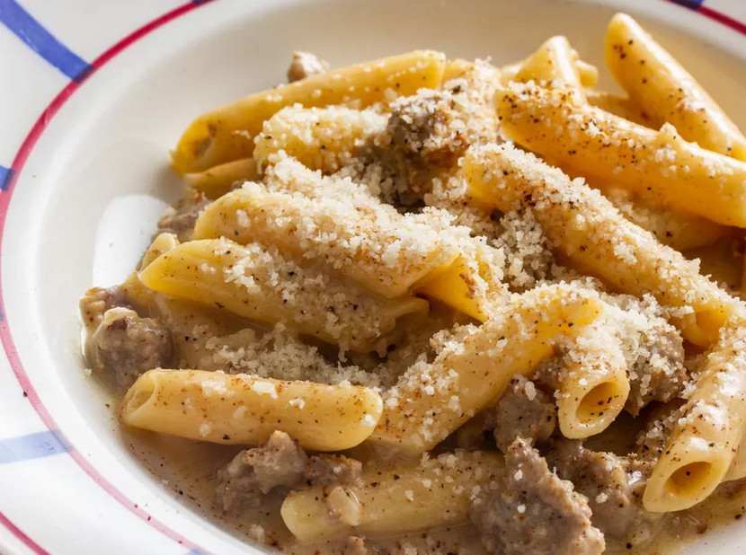

Pasta alla Norcina
Return to homepage

Pasta alla norcina is a delicious white wine cream sauce and italian sausage. It comes together quickly and is the ultimate comfort food!
Ingredients
- 2 tbsp butter
- 1 lb italian sausage
- 1 shallot
- 1/2 cup dry white wine
- 1 cup heavy cream
- salt and pepper (to taste)
- 12 oz penne or other pasta of choice
- 1 1/2 oz pecorino romano, plus more for serving
Directions
-
In a large skillet or straight-sided sauté pan, heat butter over medium heat until melted. Dice the shallot and add to the pan, along with the sausage.
Cook until sausage is just cooked through and shallot is soft and translucent, about 5-10 minutes.
-
Increase heat to medium-high and add wine. Bring to a simmer and cook, swirling pan
and scraping up any stuck-on bits with a wooden spoon, until wine is reduced by roughly half, about 1 minute.
-
Add cream and bring to a simmer, stirring frequently to keep cream from scorching, until sauce is slightly thickened, 3 to 5 minutes.
Season with salt and pepper to taste and reduce heat to lowest possible setting to keep sauce warm and prevent it from over-reducing.
-
Meanwhile, cook pasta until just shy of al dente. Transfer 1/2 cup of pasta water into the sauce, and reserve another 1 cup of pasta water
before draining pasta using a colander or fine-mesh strainer. Transfer pasta to sauce.
-
Increase heat to high and cook, stirring and tossing rapidly, until pasta is al dente and sauce coats the noodles, about 2 minutes;
add more pasta cooking water in 1/4-cup increments as needed to achieve desired consistency.
-
Remove from heat. Add pecorino romano and stir until cheese is melted and incorporated. Serve with fresh black pepper and more pecorino romano.
Recipe and photo credit: Serious Eats
Return to homepage